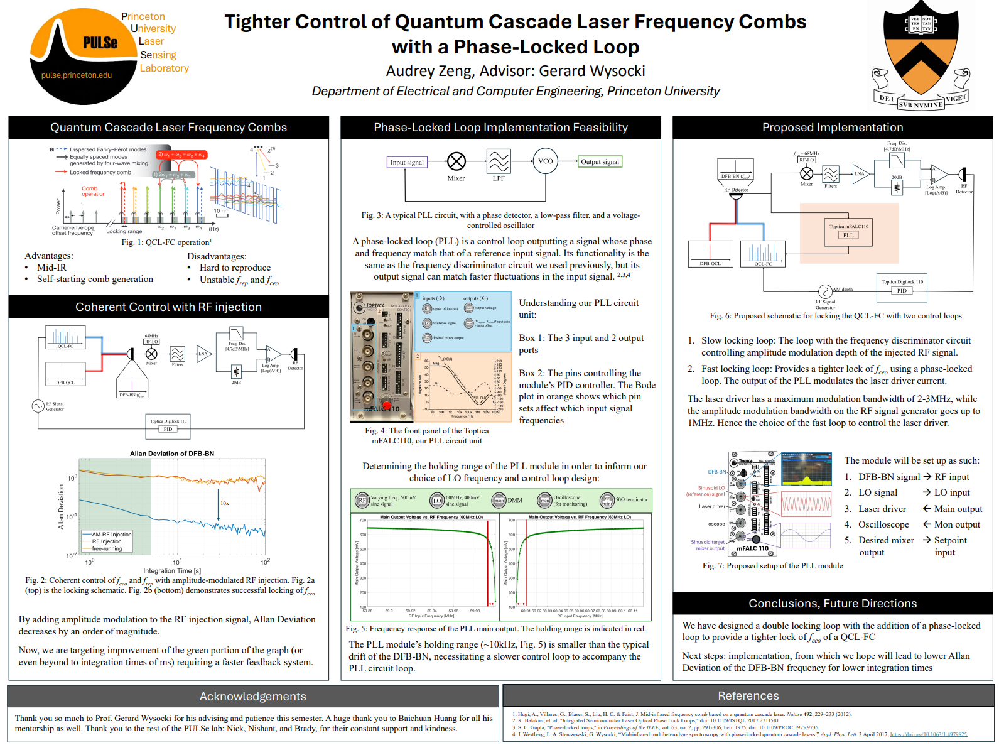
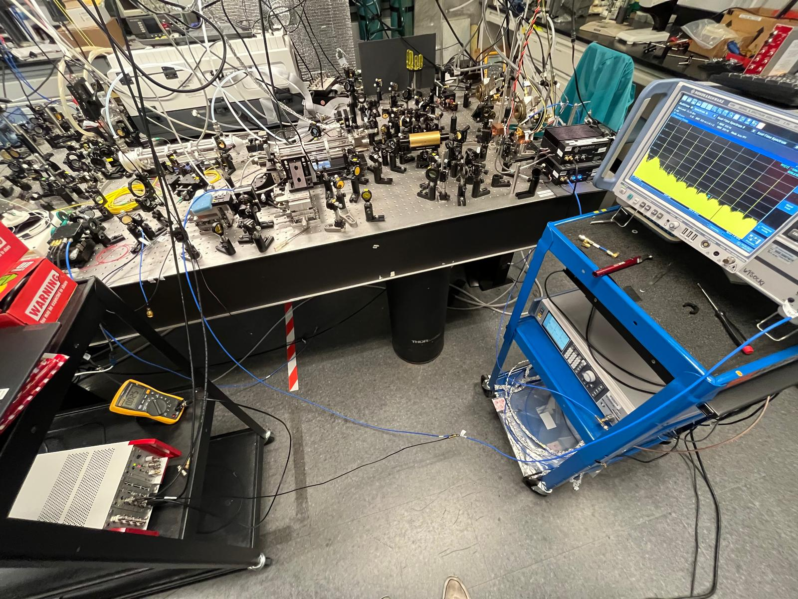
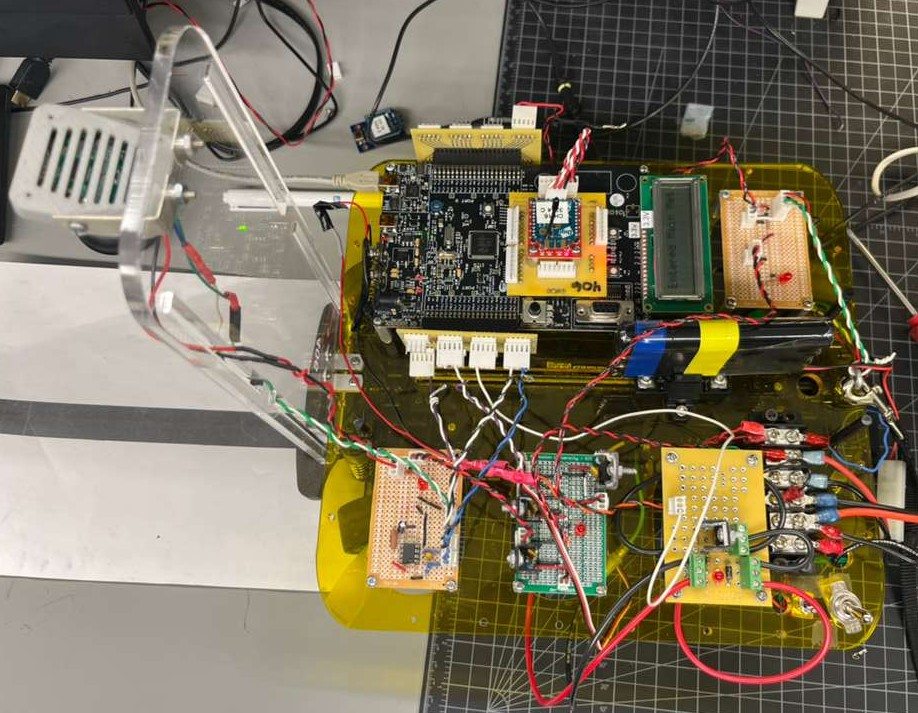
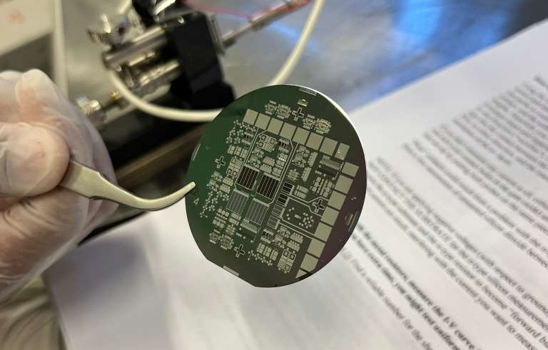

Hi! My name is Audrey, and I'm currently a junior at Princeton majoring in Electrical Engineering with minors in Computer Science and Visual Arts.
I love to figure skate, do anything in the great outdoors, and read. If you have any interest in synchronized skating, backcountry camping, or contemporary fiction, reach out!!
As an intern on the Sales Architecture Team, I developed a testing and reporting suite for Starlink network performance. I set up a physical test network in the HITL lab, using bash and Python to automate testing and reporting, and collaborated with external networking vendors to certify joint product offerings. My code samples were committed to the team codebase. Read my mentor's endorsement on my LinkedIn here.
  As an undergraduate researcher at the PULSe lab under Dr. Gerard Wysocki, I designed optical systems with RF circuits to stabilize Quantum Cascade Laser Frequency Combs, designing a double PID loop to control the amplitude modulation of an externally-injected RF signal. Read my report here.
 My partner and I built a fully autonomous car, designing and fabricating all our circuit boards from scratch, including a power distribution and motor driver board, a sensing board for speed control, and an analog video demodulation board. We wrote all of our own drivers in embedded C on a PSoC microcontroller.
 I fabricated a chip on a silicon wafer with n-channel MOSFETs, photodiodes, resistor arrays, solar cells, and NAND/NOR gates.
I was a research intern at the Shi lab in UC San Diego's Bioengineering Department, where I used Raman spectroscopy to study lipid and protein metabolism in human muscle tissue and Drosophila ovaries. Here is one publication from my time there.
works are in progress...
I've been coaching figure skaters for 4 years (and counting now). I teach all ages -- from tots to adults -- and all levels, from absolute beginners to regional competitors. I've choreographed group routines for my students. Coaching is always a highlight of my day, and it is such a privilege to get to share all the joy I have for my sport.
I am co-captain of Princeton's regionally recognized synchronized skating team. Along with running the team of 16 skaters, I also play a large role in running the larger figure skating club, which entails managing over 90 members (including recreational skaters and members of two competition teams), organizing 6 travel competitions and 2 professional shows, and helping to manage a budget of around $20,000.
I am a junior fellow for Service Focus through Princeton's Pace Center for Civic Engagement for the "Perfect City" cohort, a group run by Aaron Landsman and inspired by his own Perfect City project, which is dedicated to showing city residents, especially kids, how to use their lived experiences to influence urban planning. As a fellow, I organize meetings and coordinate between our faculty, staff, and students.
I am a technical skills trainer and leader with Princeton University's Outdoor Action program. As a leader, I lead 4-day backcountry orientation camping trips of 14-16 freshmen. As a technical skills trainer, I train prospective leaders in outdoors skills such as water filtration, tarping, and bear bagging.